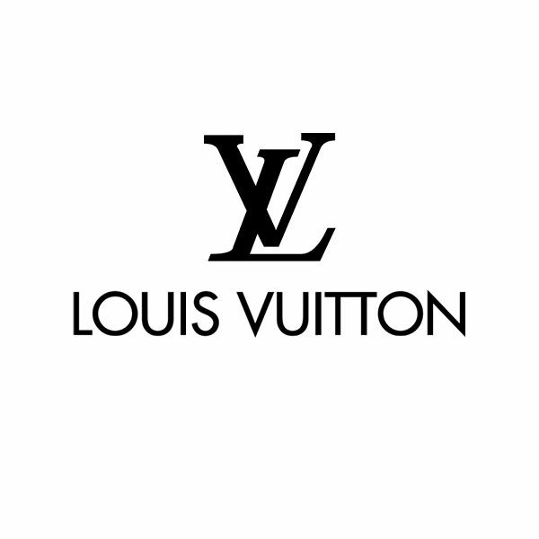
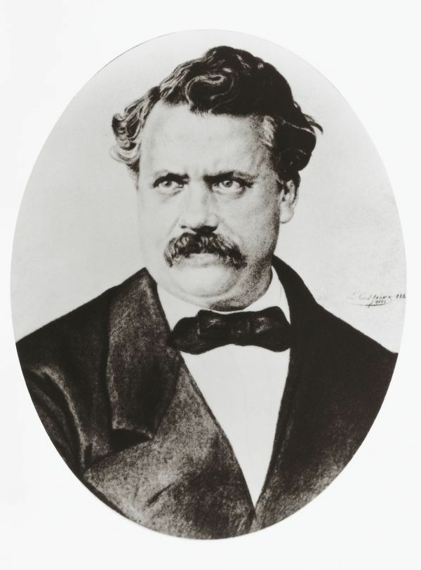

Fondée en 1854 à Paris par Louis Vuitton, un layetier-emballeur visionnaire, la maison est née de la création de malles plates, révolutionnaires pour le transport. Grâce à un savoir-faire d'excellence, l'innovation (toile monogramme) et l'internationalisation par son fils Georges, elle est devenue le symbole mondial du luxe et du voyage.
